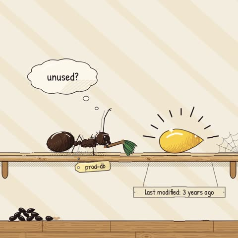
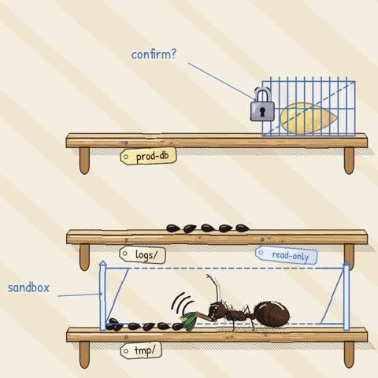

What happened
Agents take instructions literally. “Unused” to an agent means “nothing touched it recently”, not “safe to delete”. It had the permission, so it did it.
The problem isn’t the model, it’s the access. An agent with write access to production can do anything a careless human with the same credentials could, only faster.
The three fixes
- 1Read-only by default.Give the agent read access and grant write access per task, scoped to the folders it needs (
tmp/, not/). - 2Sandbox it.Run agents in a separate environment with test data. Never hand them production credentials or a shell with prod access.
- 3Confirm before destroying.Require a human “yes” for anything irreversible: delete, drop, truncate, force-push, rm -rf. Most agent tools support approval rules or deny-lists; turn them on.
Quick checklist
- Does the agent have prod credentials? Remove them.
- Are destructive commands on an approval list?
- Is its write access scoped to a folder?
- Are there backups you have actually restored from?
Try it: set the permissions
▶ interactiveTick any safeguards, then give the agent the same instruction. See what survives.
Project
Nothing ticked? Go ahead, press Clean up unused files.
A toy simulation: the agent treats anything untouched for 30+ days as “unused”.